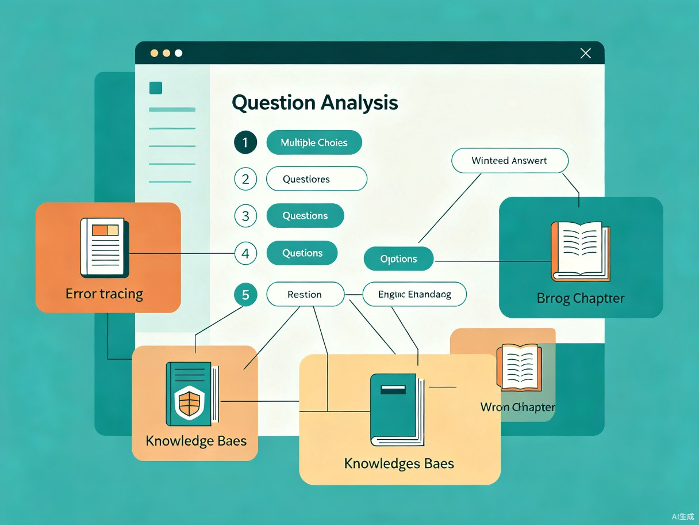

一个软考高项备考者给自己做的错题溯源 + 论文模板工坊，精准定位知识漏洞，半小时搞定论文骨架
我在备考软考高级信息系统项目管理师时，被三个真实痛点折磨了很久，市面上没有工具能一次性解决它们。这三个痛点就是我每天刷题、写论文时亲身体验到的。
产品定位：Web端小应用，核心功能两个 — 错题溯源 和 论文模板工坊，让在职考生的碎片化复习真正高效起来。
和我一样备考软考高项的在职考生，每天学习时间不足2小时，刷题量不小但正确率卡在瓶颈。
这些不是虚构的需求，而是每个在职考生都会经历的真实困境。
解析只说"选B"，但不告诉你"为什么C看起来也对"。同一知识点在不同题目中时对时错，没有工具帮你拉到一起对比，永远不知道自己到底掌握了几成。
题库里每个选项背后是哪一章的知识点从来不标。错选 C，可能 A 和 C 两个知识点都没搞懂，但工具不会告诉你"你暴露出第 3 章和第 11 章都有漏洞"。
网上范文要么太旧要么太水，想弄一个贴合自己项目经验（比如政务系统、电商平台）的模板，得翻几十篇范文再自己提炼，至少花一周。
| 维度 | 传统备考方式 | 高项精讲 |
|---|---|---|
| 错题分析深度 | ✗ 只给正确答案 | ✓ 逐选项拆解 + 知识点溯源 |
| 章节漏洞定位 | ✗ 需手动记录 | ✓ 自动关联教材章节 |
| 跨题对比 | ✗ 无法做到 | ✓ 同知识点不同考法对比 |
| 论文模板准备 | ✗ 手翻范文 1 周+ | ✓ 输入背景 30 分钟出骨架 |
| 个性化适配 | ✗ 通用范文 | ✓ 基于个人项目经历生成 |
围绕"精准定位"和"高效输出"两个关键词，打造备考效率的倍增器。
做错的题，逐选项拆解并关联到教材具体章节。不同题目里同一个知识点的错误记录自动串联，让你清楚知道到底哪个章节没学透。

flowchart LR
A[导入错题] --> B[AI 逐选项分析]
B --> C[关联教材章节]
C --> D[生成知识漏洞图谱]
D --> E[同知识点跨题聚合]
E --> F[输出薄弱章节报告]
输入你的项目背景（行业、规模、技术栈），AI 自动生成多套适配你经历的论文大纲。符合最新考纲要求，你只需要往骨架里填肉，把准备时间从一周压缩到半小时。
flowchart LR
A[输入项目背景] --> B[AI 分析经历特征]
B --> C[匹配考纲论文主题]
C --> D[生成多套论文骨架]
D --> E[用户编辑填充]
E --> F[导出终稿模板]
量化的效率对比，直观展示高项精讲的备考加速效果。
效率提升 + 实用价值 + 可扩展性，构成这个产品长期的商业逻辑。
错题溯源让刷题量真正变成掌握度，不再重复踩同一个坑。论文模板工坊把准备时间从一周压缩到半小时。
不再是"感觉自己没掌握"，而是有数据支撑的章节级漏洞报告，让每一分钟复习都花在刀刃上。
软考高项一年两次，像我这样的考生很多。后续可扩展到系统架构师、网络规划师等同样有论文需求的高级科目。
在职考生普遍愿意为"节省时间"付费。精准工具 + 高频使用场景 = 天然的 SaaS 订阅模式。